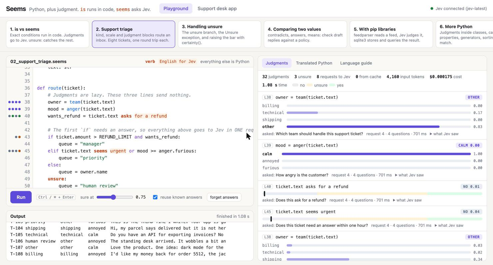

1. One rule
review.stars >= 4Python operators run in code: >, ==, in, len(...).
review.text seems happyA judgment verb sends a question to Jev and gets a probability back.
if review.stars >= 4 and review.text seems happy:
thank(review)Everything else is Python 3.13. Every Python program is already a valid Seems program, so classes, exceptions, async, pytest and every pip library work from day one. The translator turns the few new constructs into plain Python and keeps every line on its own line number.
2. Judgment verbs
Describing verbs: value VERB english
seems sounds looks mentions discusses describes
expresses suggests asks requests
ticket.text asks for a refund
item.title seems like clickbait
log_line suggests a memory leak
rows[0]["body"].strip() seems rude
(first + second) seems too long- The value on the left is what Jev looks at. It can be a name, an attribute, an index or a call. Put anything larger in brackets.
- The English runs until
and,or,if,else, a comma, a closing bracket, a colon or the end of the line. Inside brackets it also ends at theforof a comprehension. - Put the English in quotes when it needs one of those words, an apostrophe or other punctuation. An f-string works too.
text seems "rude and dismissive"
text mentions f"the product {name}"
flags = [t.text asks for a refund for t in tickets]The question Jev gets is mechanical. X asks for a refund becomes "Does this ask for a refund?"
with the value of X as the state. No model reads your source code.
Relating verbs: value VERB value
contradicts supports answers means matches
reply contradicts policy
reply answers ticket.question
a means b # equality by meaning. == stays exact
reply contradicts "all sales are final" # English goes in quotesJev gets both values as named state and a question such as "Does reply contradict policy?"
A judgment is a value
It can live in a variable, a list or a property, and it is only sent to Jev when the program needs its answer.
| Use | Result |
|---|---|
if j: bool(j) not j | True or False. Raises Unsure when Jev is not sure enough. |
j.p | The probability of yes, from 0 to 1. Never raises. |
j.verdict() | "yes", "no" or "unsure". Never raises. |
j.yes j.no j.unsure j.sure | Plain booleans. Never raise. |
a & b a | b ~a | Combine judgments without forcing an answer. |
3. Unsure
The default certainty level is 0.75. It is a policy choice, and you can change it.
if text asks for a refund:
pay_out()
else:
close()
unsure:
ask_a_person()unsure:is the last branch of anif. It runs when the condition cannot be decided.- Without an
unsure:branch, an unsure judgment raisesUnsure. A program cannot act on a guess by accident. and,orandnotfollow three-valued logic. no and unsure is no. yes or unsure is yes. yes and unsure is unsure.
try:
if text asks for a refund:
pay_out()
except Unsure as err:
log.info("not sure: p = %.2f", err.judgment.p)
with seems.certainty(0.95): # a higher bar inside the block
if text seems like a cancellation:
close_account()4. kind, scale, judgment
The three Jev primitives are three declarations. Each one is a block with a question and its entries.
kind team: "Which team should handle this support ticket?"
billing: "payments, charges, invoices, refunds"
technical: "bugs, errors, outages, integrations"
other: "none of the other teams fit"
scale anger: "How angry is the customer?"
calm: "polite or neutral, no complaint"
annoyed: "complains, but stays civil"
furious: "insults, threats, or shouting in capitals"
judgment urgent: "Does this ticket need an answer within one hour?"
yes: "an outage, lost money, or a legal deadline"
no: "a general question or feedback"| Block | Jev primitive | Call it | You get |
|---|---|---|---|
kind | Choice | team(text) | a pick: .name, .top, .p("billing"), .probabilities, .confidence, .sure, .is_one_of(a, b) |
scale | Score | anger(text) | a rating: .level, .score, .normalized, .probabilities, .confidence, float(r) |
judgment | Noul with criteria | urgent(text) or text seems urgent | a judgment |
owner = team(ticket.text)
mood = anger(ticket.text)
if owner == team.billing and mood >= anger.annoyed:
escalate(ticket)
elif ticket.text seems urgent: # one word after the verb can name a judgment
page_on_call(ticket)
unsure:
review(ticket)
match team(ticket.text):
case team.billing:
billing_queue.put(ticket)
case team.technical:
bug_tracker.open(ticket)- A description is optional. A name with spaces goes in quotes. A kind takes 2 to 255 entries, a scale 2 to 10 levels, lowest first.
- Add a "none of these" entry when nothing may fit. Jev can only pick what you list.
- Write scale levels as situations ("insults or threats"), not degrees ("very angry").
- Comparisons are three-valued, like judgments.
owner == team.billinguses the probability ofbilling.mood >= anger.annoyeduses the probability that the level isannoyedor higher. - To give Jev several named parts, use keywords:
team(text=ticket.text, policy=policy). The question can then point at a part with backticks. seems.ask("Is this a greeting?", text)is a one-off yes/no judgment with your own question.
5. Speed
One round trip to Jev takes most of a second. The language keeps round trips few, without extra code.
- Lazy. Creating a judgment sends nothing. The first time the program needs any answer, everything waiting is sent. Questions about the same value share one request. Other requests run side by side.
- Conditions. All judgments in one
and/orcondition go together. - if / elif. The judgments of the later branches travel with the first one. Answers for branches that are not reached are ignored.
- Exact first. In
amount > 500 and text asks for a refund, a falseamount > 500means Jev is never called. - No surprises. A part of a condition that calls a function never runs early. It waits for the judgments before it, as in Python.
owner, mood, refund = team(text), anger(text), text asks for a refund # nothing sent yet
if refund: # one request, three questions
...A plain for loop asks round after round. For independent items use either form:
results = seems.each(tickets, route) # rounds run side by side, results in order
flags = [t.text seems angry for t in tickets] # or: build the judgments first, read them laterAnswers are cached by model, state and question. Set SEEMS_CACHE=/path/file.sqlite to keep them
between runs. --no-cache or seems.configure(cache=False) asks again.
6. Tools
python -m seems run program.seems [args] # --stats, --trace FILE, --no-cache, --sure 0.9
python -m seems translate program.seems # print the Python. --standalone adds the import line
python -m seems check program.seems # syntax onlyimport seems
seems.install() # after this, `import desk` finds desk.seems next to .py files
with seems.trace() as events: # every request and judgment, as dictionaries
route(ticket)
print(seems.stats()) # totals: judgments, requests, tokens, cost- A
.seemsmodule gets two names for free:Unsureand the hidden runtime__seems__. - The translator uses Python's own tokenizer and fixed rules. Valid Python comes out byte for byte the same.
In valid Python two plain words never stand next to each other, so
text seems angrycannot clash with real code. - Each source line becomes exactly one Python line. Tracebacks and debuggers point at the line you wrote.
- For tests,
seems.testing.FakeJevstands in for the API. - Settings come from the environment:
TYPESAFE_API_KEY,TYPESAFE_MODEL(defaultjev-latest),SEEMS_CACHE,SEEMS_TRACE.
7. Keep in code
The TypeSafe docs list what Jev is weak at. Seems does not hide that.
- Math, counting, number and date comparisons: use Python.
- Text generation: Jev does not write. Use it to choose, not to produce.
- Jev reads literally.
text seems angryis a loose question. When it matters, declare ajudgmentand put the edge cases in itsyes:andno:criteria. - Send only what the question needs. A judgment's state is just the value on its left.
- Answers move a little between identical requests, by up to 0.05 in our runs. A judgment that sits on the 0.75 line can flip between yes and unsure. The cache makes a stored answer final, and the unsure band means a flip lands in "ask a person", not in the opposite action.
8. Run it
Everything runs in a container. Nothing is installed on your machine. You need Docker (or Podman) and a
TypeSafe API key in .env.
git clone https://github.com/kavehmz/seems-lang.git
cd seems-lang
cp .env.example .env # put your TYPESAFE_API_KEY in it
docker compose up --build -d # then open http://localhost:3004
docker compose run --rm app pytestThe playground shows every judgment with its probability, the exact question Jev got, and what it cost. The support desk page is a small Flask and SQLite service written in Seems.
